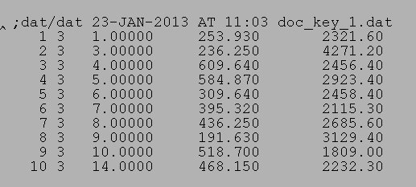
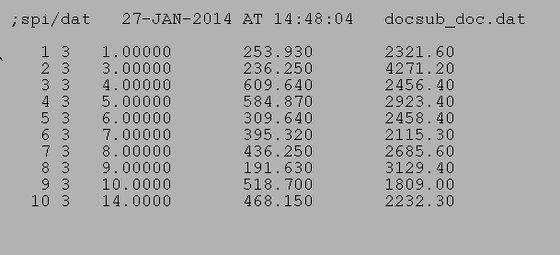

| .OPERATION: | DOC SUBTRACT | ; Subtract two document files |
| .FIRST DOCUMENT FILE: | sav_dockey | ; First doc file (input) |
| .SECOND DOCUMENT FILE: | sav_doc_merge_0 | ; Second doc file (input) |
| .OUTPUT DOCUMENT FILE: | docsub_doc | ; Doc file (output) |
| .COLUMN TO BE SUBTRACTED BY (0 IS KEY): | 1 | ; Delete keys not in both inputs |
| INPUT DOC FILE | SECOND INPUT DOC FILE |
|---|---|
|  | |
| sav_dockey | sav_docmerge_0 |
| OUTPUT DOC FILE |
|---|
|  |
| docsub_doc |